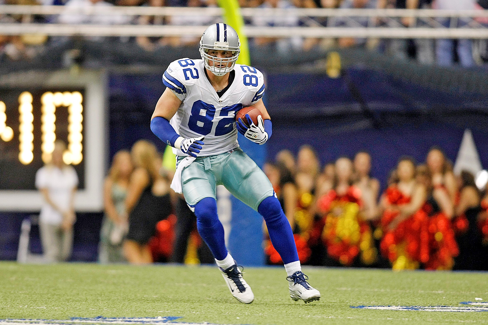

Number 5 - Tony Romo - He is the QB i grew up watching
Number 4 - Jason Witten - He made a big impact regarding my love for football
Number 3 - Zack Martin - My biggest inspiration as an offensive lineman
Number 2 - DeMarcus Ware - One of the best to do it on the cowboys, the reason i wore 94
Number 1 - Emmett Smtih - Arguably the best cowboy of all time